Projects / RAG Assistant
Offline RAG Call-Center Assistant
A self-hosted, fully-offline AI assistant that answers agents from the internal knowledge base — using Open WebUI's hybrid-search RAG over a local Ollama model.
The problem
Support agents need fast, accurate answers from a large internal knowledge base while they're on a call. Hunting through wikis mid-conversation is slow, and a plain chatbot is worse than useless here — it will confidently invent organization-specific procedures that don't exist. Whatever I built had to be accurate, grounded in the real documentation, and private: call and account context can't be shipped off to a third-party cloud API.
Why I built it
I wanted an assistant that answers from the knowledge base rather than from a model's memory, runs entirely offline so sensitive context never leaves the network, and is reachable by agents over Tailscale from wherever they're working. Open WebUI plus a local Ollama model gave me a self-hosted stack that does exactly that — no external dependencies, no data leaving the building.
How it works
Open WebUI is the front-end and the RAG engine; Ollama runs the language model locally. The knowledge base is ingested into Open WebUI, where it's chunked, embedded, and stored in a vector database. When an agent asks a question, the system retrieves the most relevant chunks and feeds them to the model, which answers grounded in that retrieved context — and can point back to where the answer came from.
The deliberate choice here was turning on hybrid search with reranking instead of plain vector search. Keyword (BM25) matching catches exact strings that semantic search glosses over — a specific NetID, an error code, a product name — while vector search catches paraphrased questions that don't share wording with the docs. A reranker then reorders the combined results so the single best chunk lands at the top of the prompt. In RAG, that "best chunk first" step is most of the battle.

RAG configuration
| Setting | Value |
|---|---|
| Embeddings | all-MiniLM-L6-v2 (local SentenceTransformers) |
| Vector store | ChromaDB |
| Retrieval | Hybrid — BM25 keyword + semantic vector |
| Reranking | Enabled (best chunk first) |
| Chunking | ~1000 chars, ~100 overlap |
| Top-k | 3 |
| Generation | Local model via Ollama |
| Access | Tailscale (private network) |
| Privacy | Fully offline — no third-party API |
Outcome & what I learned
The assistant gives agents real-time, grounded answers instead of sending them digging through the knowledge base mid-call — faster resolutions and less context-switching. The biggest lesson was that retrieval quality caps answer quality: chunk size, the BM25-vs-vector balance, and reranking shaped the answers at least as much as the choice of model did. I also got a real feel for standing up a private, fully-offline RAG stack — embeddings and generation on local hardware — which is what makes the privacy story technically true rather than a slogan.